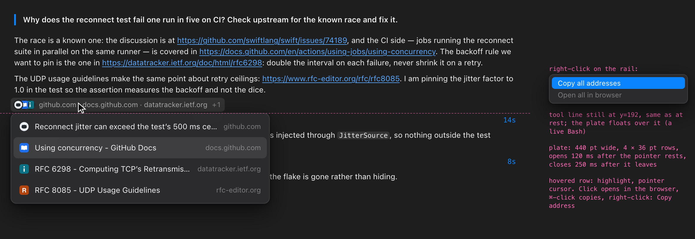
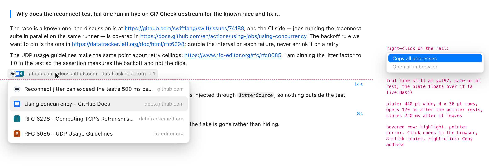
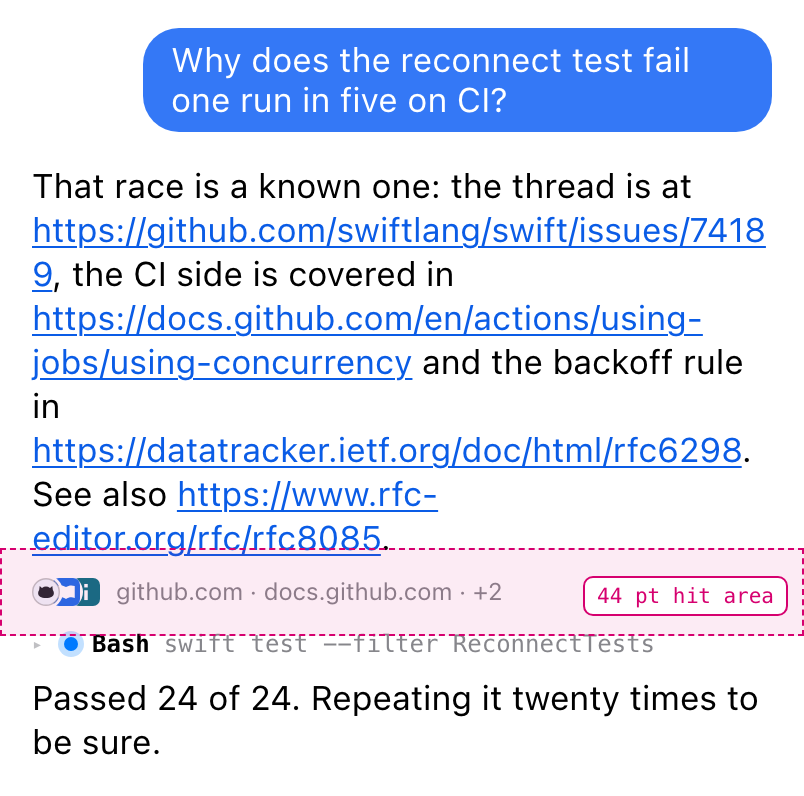
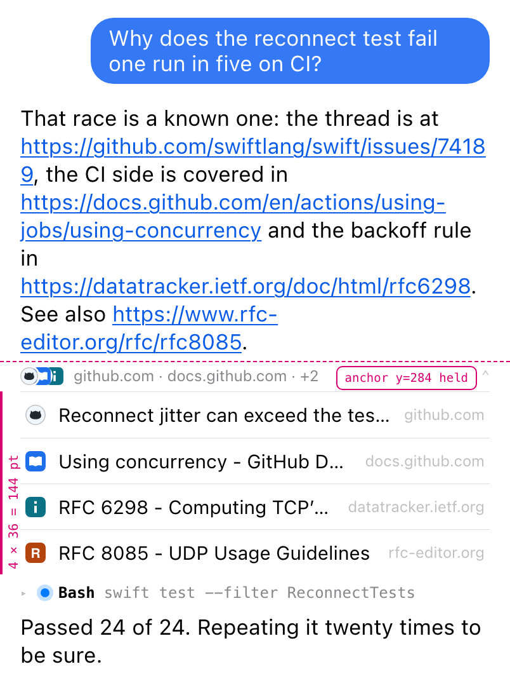
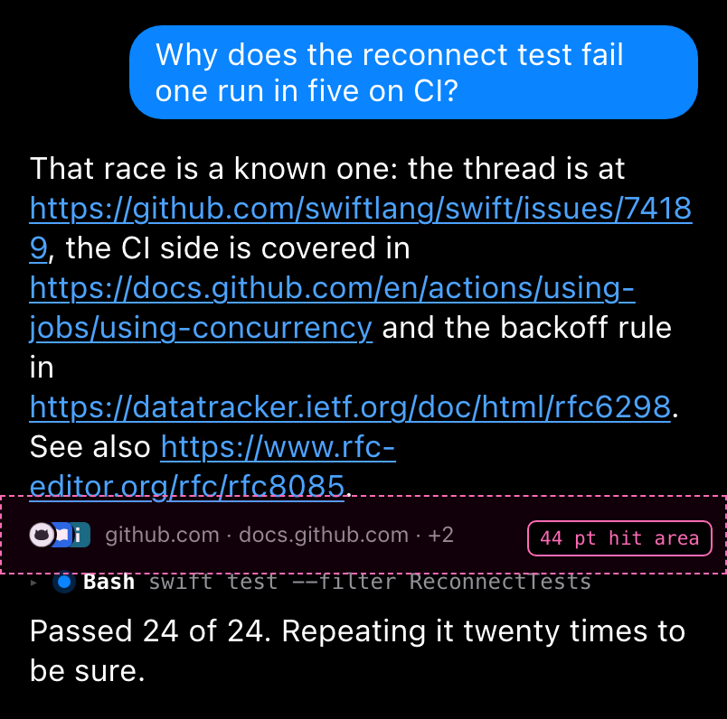
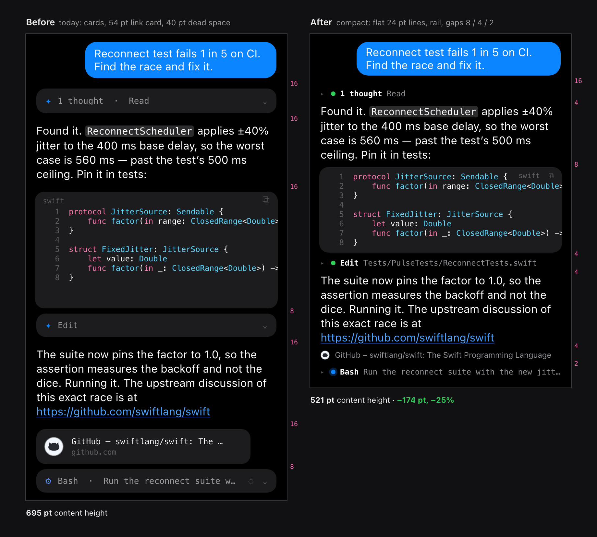
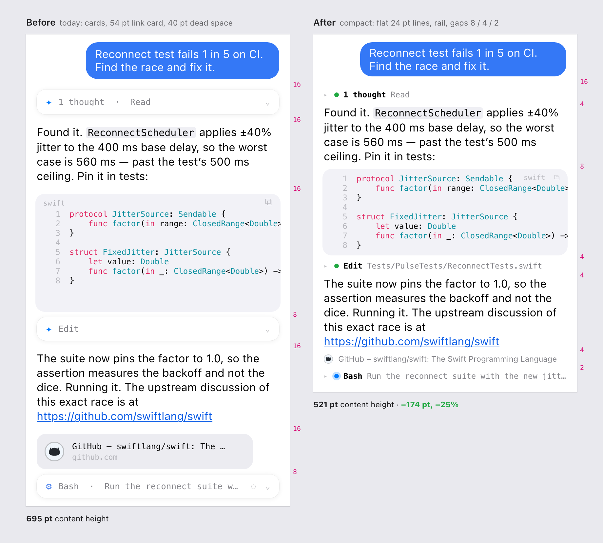

Mocks of docs/compact-chat.md: the link rail (section 4), the other compactions (section 5) and the density table (section 6). 1 CSS px is 1 pt; PNGs are 2x. Magenta text is annotation, not UI. Click a card for the live HTML (it follows the system light/dark setting unless the file name says which).

rail-hover-darkPointer on the rail, plate open over the rows below: 4 x 36 pt rows, 440 pt wide, the hovered row highlighted; the rows underneath have not moved. Right-click shows Copy all addresses.
rail-hover-lightThe same, light.
rail-phone-restAt rest, 24 pt row with the 44 pt hit area drawn over its neighbours.
rail-phone-openTapped: expanded in place, rows 36 pt, the rail top held as the scroll anchor, the content below pushed down 144 pt.
rail-phone-rest-darkAt rest, dark.rail-phone-open-darkExpanded, dark.
before-after-phone-darkCards, 54 pt link card, 40 pt dead code space and 16 pt gaps against flat 24 pt lines, rail and gaps 8 / 4 / 2: 695 pt to 521 pt, 25 % shorter (dark).
before-after-phone-lightThe same, light.